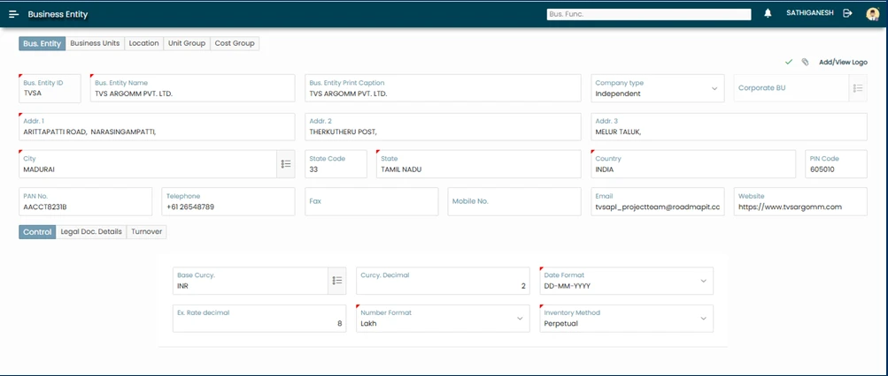
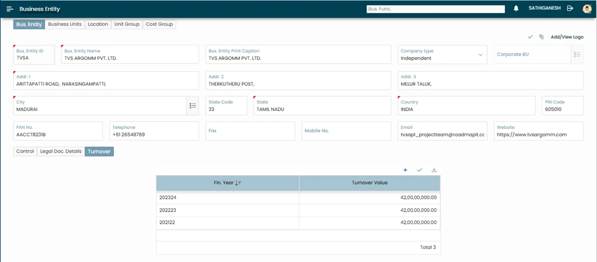

<div data-category="Financials" data-title="Business Entity" data-updated="December 01, 2025" data-contributors="RoadmapIT" data-breadcrumb="Home,Financials,Business Entity">
  <div class="page-content">
    <p>A business entity refers to a legally recognized organization that engages in commercial, industrial, or professional activities. It can take various forms, including sole proprietorships, partnerships, corporations, LLCs, or any other legal structure recognized by the government.</p>
    <p>This screen is used to create Business Entity.</p>
    <h5>Navigation path:</h5>
    <p>Setup \ Business Entity</p>
    
    <ul style="list-style-type: none; align-content: center">
      <li class="mouse-icon">
        Enter the
        <strong>Business Entity ID Description</strong>
        .
      </li>
      <li class="mouse-icon">
        Enter the
        <strong>Address</strong>
        .
      </li>
      <li class="mouse-icon">
        Select
        <strong>corporate - Independent</strong>
        .
      </li>
      <li class="mouse-icon">
        Select
        <strong>City</strong>
        from LOV.
      </li>
      <li class="mouse-icon">
        Select
        <strong>Currency</strong>
        from LOV.
      </li>
      <li class="mouse-icon">Click attachment button to attach files that are related to Entity</li>
      <li class="mouse-icon">
        Click
        <strong>Add/View Logo</strong>
        button to upload or to view the logo of business entity
      </li>
    </ul>
    <h2>Turn Over</h2>
    
    <ul style="list-style-type: none; align-content: center">
      <li class="mouse-icon">
        Click
        <i class="bi bi-plus fs-4 mx-2 text-primary"></i>
        to create a new Turnover details.
      </li>
      <li class="mouse-icon">Select Fin.Year from LOV.</li>
      <li class="mouse-icon">Set the Turnover Valve.</li>
      <li class="mouse-icon">
        Click
        <i class="bi bi-check-lg fs-4 mx-2 text-success"></i>
        to save the record.
      </li>
    </ul>
  </div>
</div>